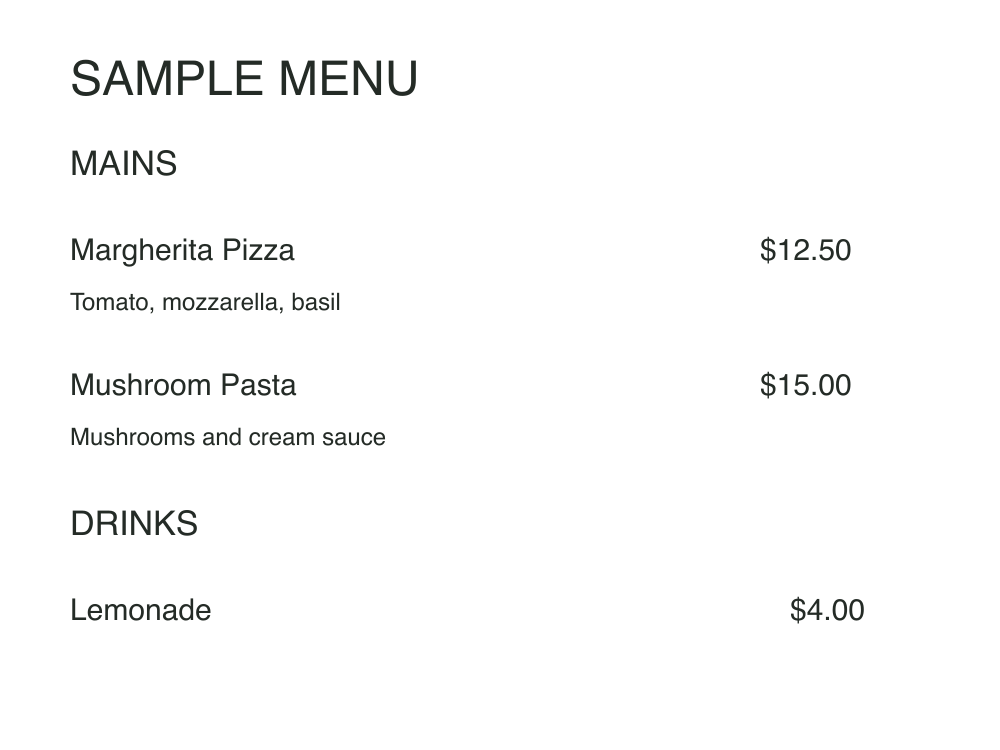

菜单图片直接交给视觉大模型
不是另接OCR：已上传的菜单JPG/PNG由后端通过多模态输入发送给现有DeepSeek V4.1 Flash。输出是可编辑的未确认菜单草稿，必须人工核对确认后才用于生成网页。
功能清单
| 步骤 | 实际行为 |
|---|---|
| 选择图片 | 只读取当前餐厅“菜单原文件”用途的JPG/PNG，1–4张，每张最多10MiB，合计最多20MiB。PDF不进入识图请求。 |
| 明确同意 | 单独勾选同意发送给DeepSeek。上传本身不自动识别；图片会离开本机到模型服务，并产生真实模型费用。 |
| 直接看图 | 后端授权读取与摘要核验，再以base64 image_url送入deepseek-flash；不是先OCR转文字，不用公共图片URL，不公开存储路径或密钥。 |
| 草稿编辑 | 保留分类、菜名、描述、价格原文、不确定警告、内部核对备注。可添加或删除分类／菜品，修改价格，整体保存。 |
| 人工确认 | 核对后确认。识别结果不能自动成为正式菜单；保存或新识别会撤销当前确认，失败保留原菜单。 |
| 接入生成网页 | 确认菜单冻结进下一次HTML版本。由后端插入和转义真实菜名与原价；布局模型不改价格，不接收内部警告和核对备注。 |
你自己怎么测试
- 打开 https://localhost:5173，原测试账号登录，选择餐厅。
- 进入“菜单与图片”，按“菜单原文件”用途上传清晰的JPG或PNG。可用下面合成测试图，也可用你有权使用的真实菜单。
- 点击“大模型识别菜单”入口或进入“菜单识图”页签，选择图片并勾选发送给DeepSeek的同意。
- 发起识别，等待持久任务完成。逐项对照原图核对分类、菜名、描述和价格。不要把模型输出当保证正确；模糊内容会提示核对或留空。
- 手动修改一处菜名或价格，点击保存，再勾选已核对并确认菜单。观察菜单revision和确认状态。
- 进入“网页生成”，核查当前菜单状态；确认资料后生成新网页，预览菜单是否使用你确认后的文字和价格。旧网页／旧发布版本不自动变化。
- 再修改菜单并保存，不确认时尝试生成，应提示先确认；确认后重新生成，旧网页仍保留旧快照，直到单独发布新版。
- 切换不同餐厅检查图片及菜单不会混用。已被成功识别／网页版本引用的素材不能直接删除。
真实模型检查样例
下面是工程合成菜单图，不是真实餐厅资料。实际发送图片到DeepSeek后识别出3个菜品，样例中的 $12.50、$15.00、$4.00 均匹配。该结果不代表所有拍摄角度、语言或模糊图片都能正确识别。

查看实际模型返回结果，其中 merchant_confirmed=false，并未替商家确认或改数据库。
范围和限制
- 当前最多20分类、总计80菜品。价格保存为原文字符串，可包含币种符号及多规格价格；不做支付和货币推断。
- PDF仍可上传、查看和下载，但本轮不做PDF直接视觉输入或页面转换。请先提供菜单图片。
- 菜单识图、Agent对话和网页生成共享每账号滚动24小时30次任务额度；识别成功和失败都计入任务额度。每店最多200条识图任务记录，网页版本上限仍为20。
- 不确定或无法读出的价格不填为0、不猜过敏原；内部核对备注／warnings不对网站访客展示，也不再发送给网页布局模型。
- 源图在发送前后核验归属、用户状态、摘要及租约。任务、结果和引用事务化；网络中断不盲重试计费请求，不替换已有确认菜单。
- 操作超时且结果未知时保留原输入／幂等键，先核查重试原请求，避免重复发起新的计费任务。
- 本轮不包含AI生成图片、顾客预订、正式域名或云端部署；现有发布网址仍只在本机可用。
工程验证
前后端类型检查和构建通过；96项后端工程测试通过，无跳过，包含真实PostgreSQL识别／编辑／确认、权限／幂等、跨店、失败保留、用量／租约、确认菜单到网页快照、旧版不变及外发前授权检查。真实视觉模型只使用合成图做连通与价格校验；未读取你的实际商家图片、未改变商家数据，浏览器界面验收由你完成。
005迁移新增菜单草稿与识图任务，开发库已执行；原001–004迁移文件保持不变，开发数据未清空。密钥继续只由后端私有配置加载，不进入HTML、浏览器、日志或Git。